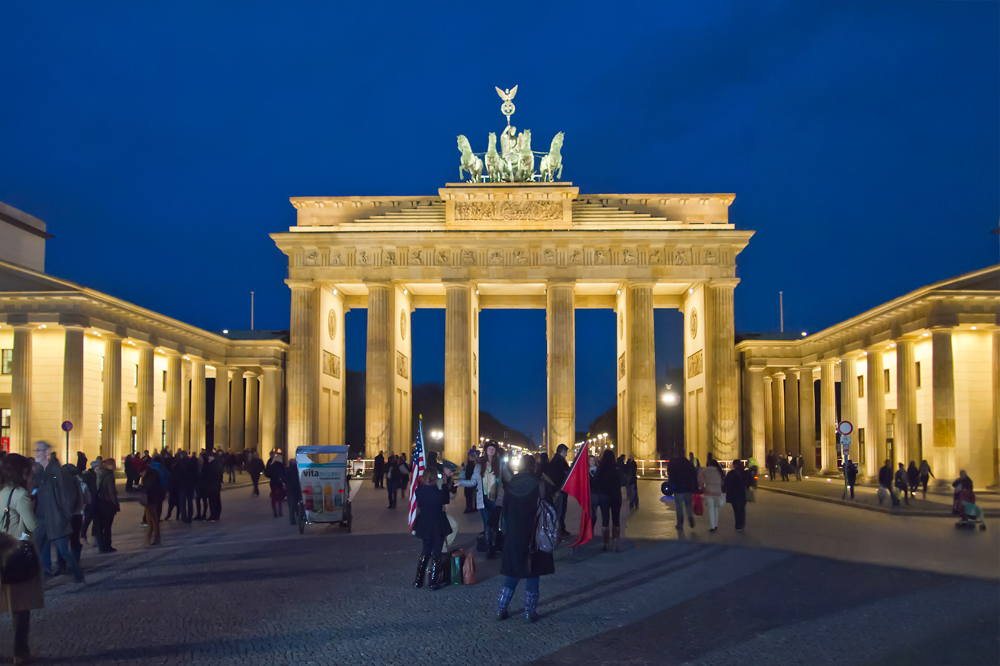
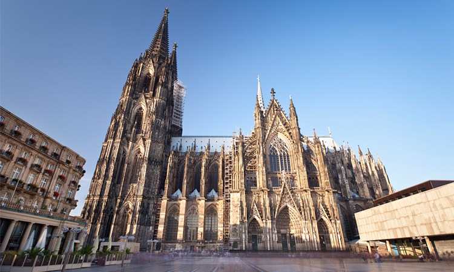
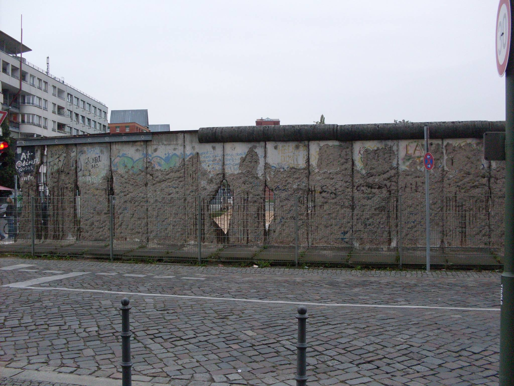
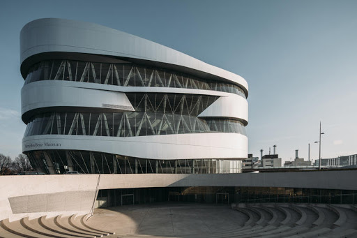

PONTOS TURÍSTICOS
CASTELO NEUSHWANSTEIN
Construído no século XIX com uma arquitetura de estilo fantástico. Apesar de não ser permitido fotografias no interior do castelo é um dos pontos turísticos mais fotografados da Alemanha. Também é considerado o cartão postal do país. O nome Neuschwanstein é uma referência ao "cavaleiro do Cisne", Lohengrin, da ópera com o mesmo nome.

PORTÃO DE BRANDEMBURGO
O Portão de Brandemburgo é uma antiga porta da cidade, reconstruída no final do século XVIII como um arco do triunfo neoclássico.

CATEDRAL DE COLÔNIA
A Catedral de Colônia ou Colónia, localizada na cidade alemã de Colônia, é uma igreja católica de estilo gótico. É a quinta igreja mais alta do mundo e foi classificada como património da humanidade em 1996.

MEMORIAL DO MURO DE BERLIM
É um mémorial para lembrar da divisão de Berlim e conhecer um pouco da história, das famílias que foram abruptamente separadas e das mortes de pessoas que tentaram passar de um lado para o outro.

MERCEDES-BENZ MUSEUM
Um museu de auto-móveis em Stuttgart. Ele conta a história da marca Mercede-Benz e a sede internacional da Daimler AG.
